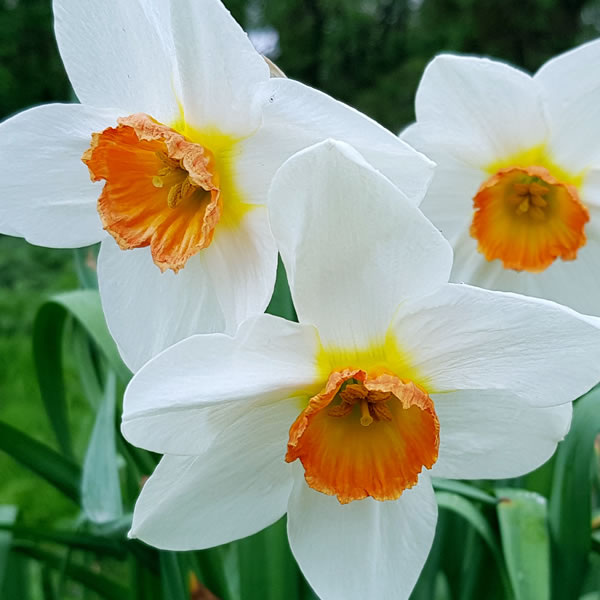

This December birth flower is significant and symbolic and is a great gift to mark Birthdays. It is also a fantastic method to change the appearance of the celebration! Two types of December's birth flowers are included in the celebration, including Narcissus as well as Holly. Each flower used to mark the birth of a child is unique in its significance and may bloom throughout during the entire month of December, or isn't difficult to arrange!
Holly as a Christmas birth flower is a symbol of the satisfaction of cultivating your own food, which is perfect to use in the Christmas season and as a gift to infants born during the month of December!br Holly's significance is huge and significant. The time of the year is usually used as a decoration but it also has a long-standing tradition and many interpretations. Whatever the significance of holly, it's evident that the plant is a symbol of significance and symbolism.
The Winterberry is sturdy and can grow to fifteen feet in height. It is stunning with gorgeous leaves, but it is usually cultivated to grow fruit that is great to add color to winter as well as for flowers that bloom.
For winterberry to flourish, also known as dark birch is the best choice for an area that is shaded and has lots of sun. While it may not provide much illumination, it could yield more nutritious fruits when exposed to the sun.
If you're trying to English the garden, you can plant the seeds in soil that is slightly acidic and deficient in nutrients. The best time to plant them is in the fall or spring to allow them to be established before the cold winter months set in. If you'd like to keep your plant in mind, you can treat it regularly throughout the year.
It is believed to be the flower of birth during Christmas usually referred to as the Narcissus. It is thought to represent the affection for Ancient Greece and was for certain times associated with weddings and marriages in European theology.
The name given to the flower originates from its place in the Greek mythology of Narcissus who was is Narcissus, the Greek youthful man Narcissus. The man could be amazed by the image of him as he sat in the pool and made sure his face was towards himself.
Be sure to lightly rake the soil to ensure that the soil is in contact with the seeds. After that, add the water. It will appear as an inflection point during the cooling process, but it appears to be growing once you strip the cut bulbs off of their freezing capabilities.
You've probably already collected all the data on the significance of Christmas birthday flowers. It is your turn to find the. Why you ought to think about getting an image of the flower since there are many options to choose from. The motives for getting this tattoo could be:
Like the way, zodiac signs or stars reflect our traits and personalities. A birth tattoo is a reflection of our personality and individuality. So if you're one of the people who appreciate tattoos that express their character This tattoo is what you require.
Birth flowers make your first impression on other people. This is why you might want to get a Dec. Birth Tattoo with flowers if you believe that everyone should be aware of your birth sign. Sagittarius.
If someone close to your heart experiences a thrilling new beginning during the course of this month. You could choose to get this tattoo to show your appreciation towards them.
Flower tattoos for birth are a great method to commemorate your birth date and your.
The implications go to the idea that tattoos will be first introduced to the world around December. You could even contemplate tattoos! Here's a list of the most frequent effects: